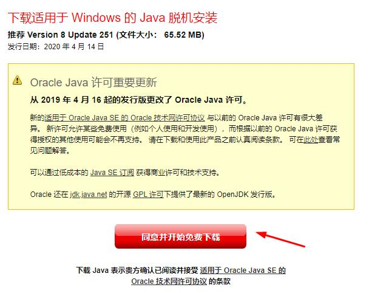
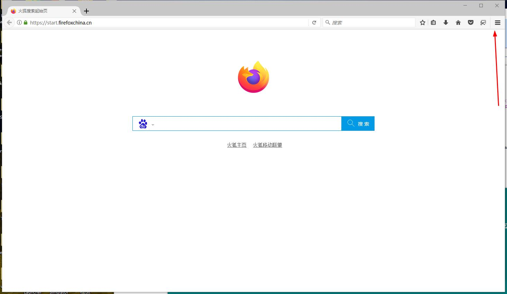
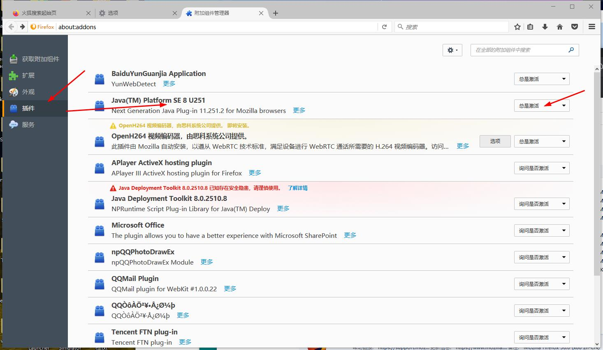

Minecraft 旧版
Applet教程
这是对于旧版火狐的教程
（本教程使用了火狐50版本，32位浏览器）
1. 先去Java.com下载32位的Java8。去官网

2.安装完Java8之后，去下载旧版32位火狐浏览器，因为火狐52版本的32位浏览器（除52 ESR版本外）开始不支持Java applet（点这下载）
3.在火狐浏览器这里找到像“三”的按钮，找到附加组件

4.然后找到插件那一栏，找到带有“Java(TM) Platform..."的插件，把它设为总是激活就可以了

5.*如果Java小程序被安全阻止，请按照IE启用Applet教程的第二步，点这里快速传送
（带*的是指可选操作）